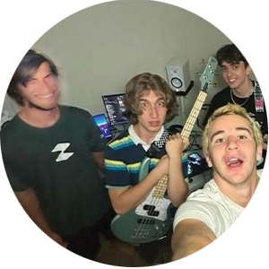

DOOR CITY OVER HERE
Hailing from the mountains of Salt Lake City, Utah, Door City is an alternative indie pop band with a punchy, synth-heavy sound. The band is currently rehearsing an electrifying collection of original and cover songs to bring you a live experience you'll never forget. If you think you've been to Door City, think again. Keep an eye on the Door City Instagram to be the first to know about shows and new music releases!
Door City was created in 2022 by Connor Nygard (bass and vocals) and Ben Worwood (lead guitar and vocals). After releasing their critically-acclaimed singles Remedy and Feel Right, Carson Belnap (rythm guitar and vocals) and Sam Whitmer (drums) joined the duo to begin working on a self-produced EP and put together a live show for the first time in the band's history.


ACKNOWLEDGEMENTS
Door City is influenced by contemporary indie bands like Wallows and The Backseat Lovers, as well as early 2000's alternative groups like the Strokes and Cage the Elephant. Credit is due to Andrew Smith for coming up with the band name, and Nathan Fielder, for creating The Rehearsal which inspired the name.